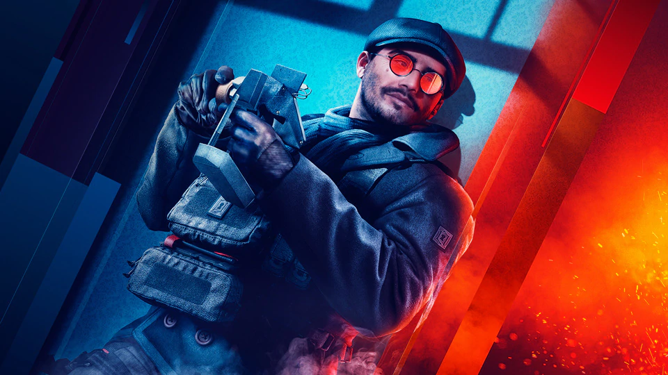

MEET FLORES, THE MASTER THIEF
“Hey Harry,
Gridlock here. Ash was busy, so she asked me to update you on specialist Santiago “Flores” Lucero’s progress. She must’ve noticed that we often have lunch together, along with Dokkaebi. What can I say? He loves tech and mechanics, so the three of us have a lot in common.
He’s excited about the resources we offer, and he spends a good bit of time up in Mira’s business. I doubt she appreciates having him looking over her shoulder, but with time she’ll realize he can be an asset for her. He’s always made his own tools and weapons, and he’s got a different perspective from hers.
Flores doesn’t talk much about growing up in Buenos Aires, but he has heaps to say about the crime lords he used to steal from, both there and in Los Angeles. They’re grand tales of heroism, and I’m inclined to believe them. Ash made it very clear that he’s not just a master thief, but a professional with convictions. I doubt she would have helped him get out of Argentina if she didn’t respect him.
In general, I’d say he’s a good mate. A bit awkward, but he listens when others speak, which is more than I can say for a lot of people. Every night he calls home to talk to his husband, but he’s very private about their relationship (with me at least). He cares about people in general, but his marriage is on another level. Even when he takes off his ring, it never leaves his person.
I’m glad Ash got him on board. I’m sure she had her own reasons, but I don’t think that matters in the grand scheme of things. What does matter is the expertise Flores brings, his perspective, and the shiny little explosive invention he brought along. I’m excited to see him in action, I have a feeling a lot of people will be surprised.
-- Tori “Gridlock” Fairous”
Visit our channel twitch.tv/rainbow6 on February 21st for a full reveal of Crimson Heist and the next Year of Rainbow Six Siege.